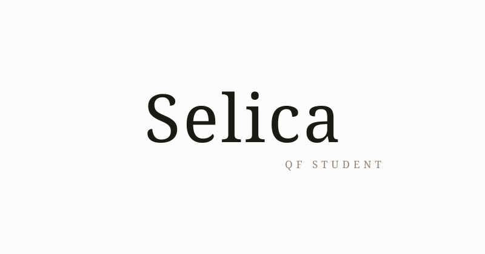

Quantitative Researcher
These papers look at the world of finance through the lens of mathematics. By using formulas and data, they aim to turn complex market behaviors into clear, predictable models.
A Python-based simulation modeling multi-asset portfolio paths over 100 days using historical stock price covariance matrices and Cholesky decomposition.
Detailed solutions for exercises in Actuarial Math - Master's level.
A collection of solved problems regarding Probability and Calculus used in Finance.
Solutions for exercises in Option and Futures Pricing, Bonds and Credit Derivatives.
📧 Email: fjorida.selica@hotmail.com
📧 Institutional E-mail: fjorida.selica@studio.unibo.it
🔗 LinkedIn: View Profile